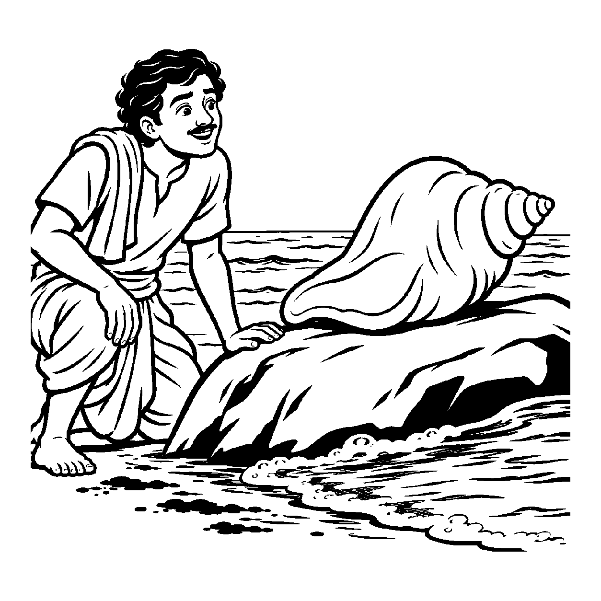

ધધખતા તાપણામાં એક તાંબાનો કળશ મૂકેલો છે. અગ્નિની પ્રચંડ ગરમી (ઉપાધિ) થી તે લાલચોળ થઈ ગયો છે. સામાન્ય માણસ કહે છે: "આ તાંબું પોતે જ અગ્નિ બની ગયું છે, તે અતિશય ગરમ છે!" પરંતુ એક ધાતુશાસ્ત્રી કહે છે: "તાંબું ભલે અગ્નિની ઉપાધિથી વર્તમાનમાં લાલચોળ અને ગરમ ભાસે, છતાં અગ્નિ હટતાં જ ક્ષણવારમાં શીતળ થઈ જવાનો તેનો મૂળ શુદ્ધ સ્વભાવ તેની ભીતર સદા નિત્ય વિદ્યમાન છે!" તેવી જ રીતે સંસારી જીવ ભલે વર્તમાનમાં જન્મ-મરણ, વિષય-વાસના અને ક્રોધાદિ કષાયોની બાહ્ય ઉપાધિઓથી ઘેરાયેલો હોય, છતાં તે ઉપાધિઓની ઉપસ્થિતિની સાપેક્ષતા હોવા છતાં — "આ સંસારી આત્મામાં પણ ઉપાધિઓ દૂર થતાં જ સિદ્ધ થવાનો નિત્ય શુદ્ધ પર્યાયસ્વભાવ અખંડ બિરાજે છે" — એમ ઉપાધિની વચ્ચે પણ નિત્ય શુદ્ધ પર્યાયને મુખ્યતાથી ગ્રહણ કરતો જે નય છે, તેને 'ઉપાધિસાપેક્ષ નિત્યશુદ્ધપર્યાયાર્થિકનય' કહેવાય છે.
આ નય ઉપાધિનિરપેક્ષ નય કરતાં એક ડગલું આગળ વધીને વાસ્તવિકતાનો સ્વીકાર કરે છે. તે એમ નથી કહેતો કે 'સંસારીમાં ઉપાધિ નથી'; તે સ્પષ્ટ સ્વીકારે છે કે જીવમાં જન્મ-મરણ અને વિષય-કષાયરૂપી ઉપાધિઓ વિદ્યમાન છે. પરંતુ તે ઉપાધિઓ આગંતુક છે, આત્માનો સહજ સ્વભાવ નથી. જેમ મેલા પાણીમાં ફટકડી નાખતાં જ કાદવ નીચે બેસી જાય છે અને જળ નિર્મળ બને છે, કારણ કે જળમાં નિર્મળ થવાની શક્તિ ઉપાધિ છતાં નિત્ય સચવાયેલી હતી. તેમ સંસારી જીવમાં પણ મોક્ષ પામવાની શુદ્ધ પર્યાયશક્તિ સદા સુરક્ષિત રહે છે.
આ નય સાધકને જગાડે છે કે વર્તમાન કષાયો કે પાપોથી ગભરાઈ જવાની જરૂર નથી; ઉપાધિઓ દૂર થતાં જ આપણો શુદ્ધ પરમાત્મસ્વભાવ પ્રગટ થવા આતુર છે.
કષાય વિષય ઉપાધિ ઘેરે, જન્મ મરણનો ફેરો;
તોય ભીતર શુદ્ધિ વસે, આતમ તેજ ઘણેરો.
તાંબું તપે અગ્નિ મહીં, શીતળતા ના જાય;
ઉપાધિ સાપેક્ષ સમઝતાં, મુક્તિ પંથ જણાય.
શરીરાદિ ઉપાધિ વચ્ચે પણ આત્માના મૂળ ધર્મ અને સત્ય પ્રત્યે સદા સજાગ રહેવું.

ધર્મપુરી નગરમાં રતનલાલ નામનો એક યુવાન વ્યાપારી પોતાના મનમાં વારંવાર ઊઠતા વિષય-વાસના અને ક્રોધના ભાવોથી અત્યંત દુઃખી હતો. તે વિચારતો: "હું મંદિરે જાઉં છું તોપણ મારું મન કષાયોમાં ભટકે છે. હું ક્યારેક જૂઠું બોલી જાઉં છું. શું મારી અંદર ક્યારેય કોઈ પવિત્રતા આવી શકે? જ્યાં આટલો કચરો ભરેલો હોય ત્યાં શુદ્ધ આત્મા કેવી રીતે હોઈ શકે?" તે પોતાને સર્વથા અશુદ્ધ અને અપાત્ર માનીને સાધના છોડવા બેઠો હતો.
તે સમયે સાગરકિનારે એક વિવેકી મુનિરાજ પધાર્યા. તેમણે રતનલાલને સાથે લઈ દરિયાના કાદવવાળા કાંઠા પર પડેલા એક શંખ તરફ ઈશારો કર્યો. શંખ કાદવ, લીલ અને ગંદકીથી ખરડાયેલો હતો. મુનિશ્રીએ શંખ ઉપાડીને દરિયાના સ્વચ્છ મોજામાં ત્રણ-ચાર વાર ધોયો. કાદવ ધોવાઈ જતાં જ તે શંખ દૂધ જેવો ઉજ્જવળ અને ચમકતો થઈ ગયો અને મુનિશ્રીએ તેમાં ફૂંક મારી તો એક અતિ મધુર અને દિવ્ય ઓમકાર નાદ ગૂંજી ઊઠ્યો! મુનિશ્રીએ કહ્યું: "રતનલાલ! ઉપાધિસાપેક્ષ નિત્યશુદ્ધપર્યાયાર્થિકનયને ઓળખ! આ શંખ કાદવમાં પડ્યો હતો છતાં તેની ભીતરની શ્વેતતા અને દિવ્ય નાદ કાદવરૂપ થયા નહોતા! તેમ તારા આત્મા પર વિષય-કષાયની ઉપાધિ હોવા છતાં, તારી ભીતરનો શુદ્ધ પરમાત્મસ્વભાવ લેશમાત્ર નષ્ટ થયો નથી! કેવળ જ્ઞાન અને વૈરાગ્યના નિર્મળ જળથી આ કષાયો ધોઈ નાખ, તારો આત્મા પણ આ શંખની જેમ દિવ્ય નાદથી ગૂંજી ઊઠશે!" રતનલાલની હતાશા ક્ષણવારમાં ઓગળી ગઈ. ઉપાધિની વચ્ચે પણ શુદ્ધતાનું સાતત્ય સમજાતાં જ તેના હૃદયમાં નવો ઉત્સાહ પ્રગટ્યો અને તેનું ચિત્ત પરમ વિશ્રામમાં શાંત થઈ ગયું.
જો જીવ કેવળ ઉપાધિને જ જોઈને આત્માને કાયમ માટે અશુદ્ધ માની લે, તો તે આત્મશુદ્ધિનો પુરુષાર્થ જ ત્યજી દે છે. આવી એકાંત જડતાથી જીવ વર્તમાન વ્યવહારિક સાધના અને કર્તવ્યોની ઉપેક્ષા કરી બેસે છે અને ક્રમિક પરિણામોને સુધાર્યા વિના અકાળે પૂર્ણતાના મિથ્યા સંતોષમાં રાચે છે.
આ નય ઉપાધિઓની વાસ્તવિકતા સ્વીકારીને પણ અંતરંગ શુદ્ધિની નિત્યતા પ્રગટાવે છે, જેથી સાધક હું-પણાને ખોઈને પોતાના આત્મસ્વરૂપમાં સ્થિર થાય છે.